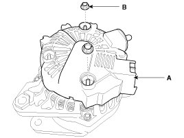
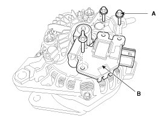
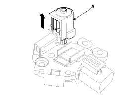
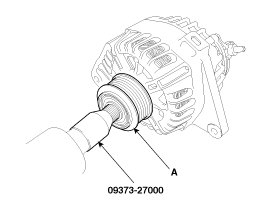
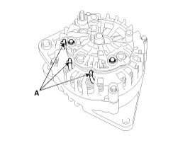
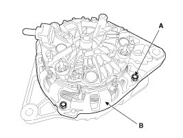
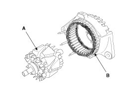
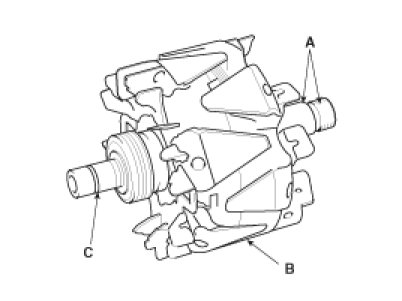
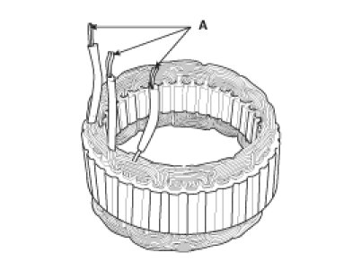

Overhaul
Disassembly
1. Remove the rear cover (A) after removing nuts (B).

2. Remove the mounting bolts (A) and the regulator assembly (B).

3. Remove the slip ring guide (A) after pulling it.

4. Remove the OAD(Overrunning Alternator Decoupler) cap.
NOTE:
- When installing, replace with new OAD cap.
5. Remove the OAD(Overrunning Alternator Decoupler) pulley (A) using the special tool.

6. Unsolder the 3 stator leads (A).

7. Remove the 4 through bolts (A).

8. Disconnect the rotor (A) and housing (B).

Reassembly
1. Reassemble in the reverse order of disassembly.
NOTE:
- When reassembling OAD pulley, replace with new OAD cap.
Inspection
[Rotor]
1. Check that there is continuity between the slip rings (C).

2. Check that there is no continuity between the slip rings and the rotor (B) or rotor shaft (A).
3. If the rotor fails either continuity check, replace the alternator.
[Stator]
1. Check that there is continuity between each pair of leads (A).

2. Check that there is no continuity between each lead and the coil core.
3. If the coil fails either continuity check, replace the alternator.